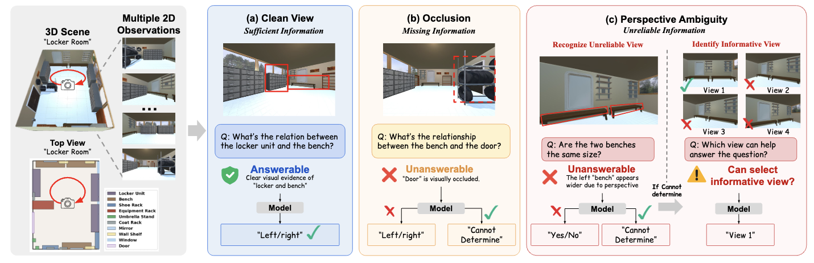
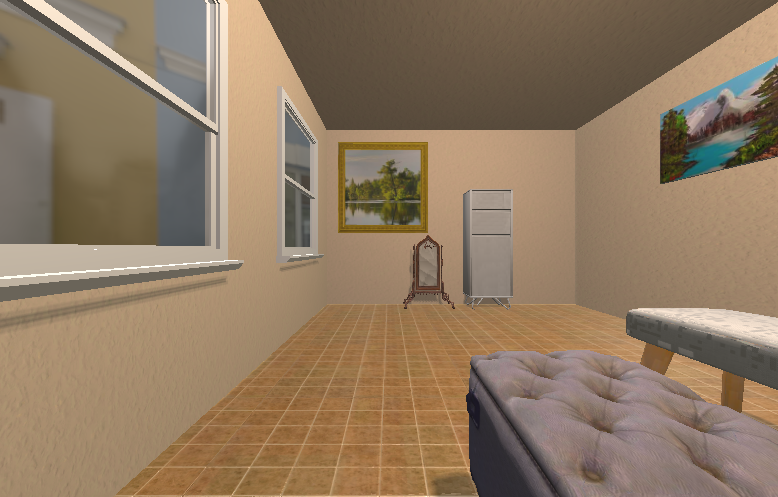
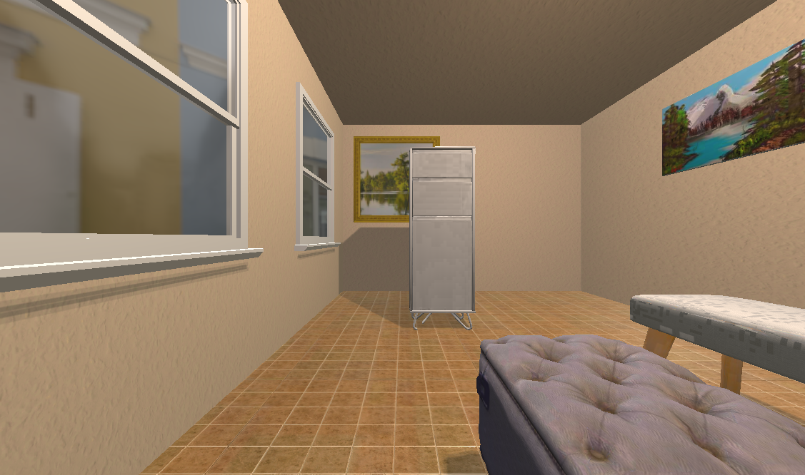
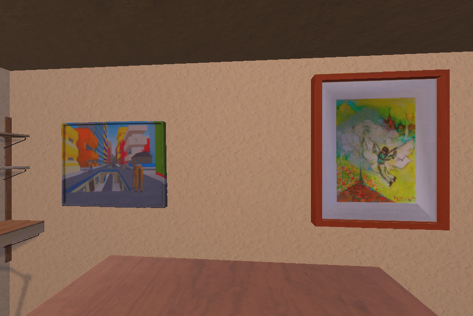
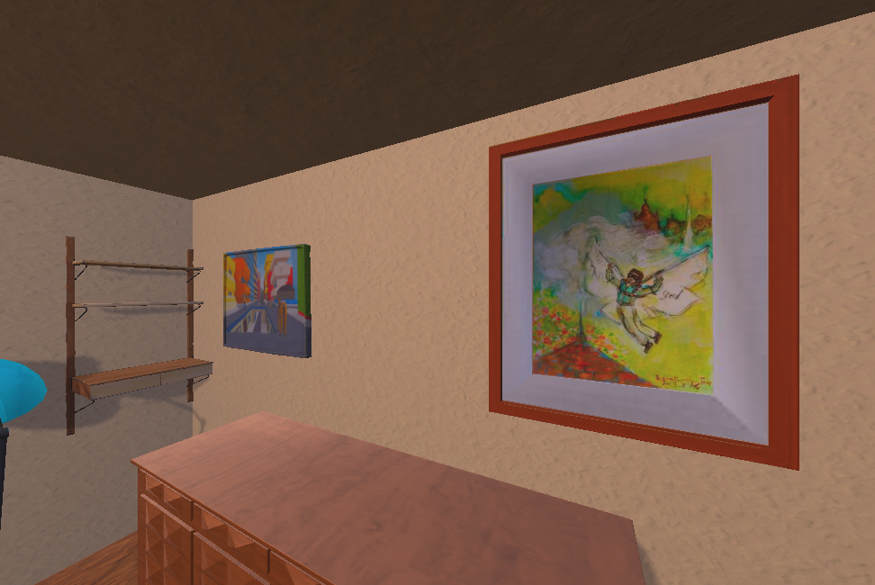
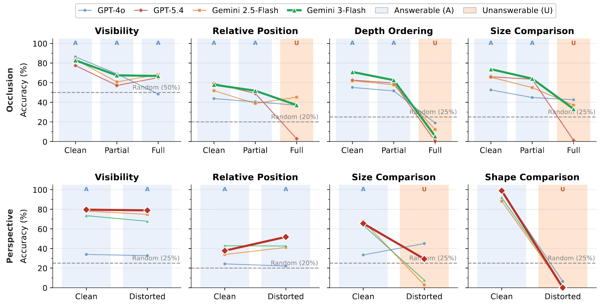

Visual observations are inherently limited views of a 3D world — occlusion hides objects and perspective makes geometry unreliable — yet existing spatial reasoning benchmarks assume observations are sufficient, evaluating only answer correctness rather than whether models know when a question cannot be reliably answered. We introduce SPATIALUNCERTAIN, a controlled 3D benchmark with two observation challenges — occlusion (hiding target information) and perspective ambiguity (misleading visual cues) — where each question is answerable under clean views but requires abstention under the challenge condition. Across frontier VLMs (GPT-4o, GPT-5.4, Gemini-3.0-Flash, Qwen2.5-VL, InternVL), we find two consistent failure modes: overconfident answering (~30% accuracy under occlusion, <10% under perspective ambiguity) and near-random performance on selecting viewpoints that would resolve ambiguity. Structured prompting partially improves abstention but trades off answerable accuracy, while fine-tuning on diverse ambiguity conditions yields more robust observational uncertainty — suggesting this capability is learnable but requires exposure to varied uncertainty signals.
A clean 3D indoor scene with the target object fully visible.
An occluder object is added between the camera and the target.
Q:

Clean: answerable → ""

Occluded: abstain → "Cannot Determine"
A pair of comparable objects (e.g. two artworks) is chosen in the 3D scene.

Equidistant view — apparent size reflects true size. Answerable.

Q: Are the two benches the same size?
Ambiguous: abstain
Then: "Which view resolves it?" → View 1
Perspective-distorted view — nearer object looks larger, requiring abstention. On abstention, the model must pick an informative view (single- & two-stage).
Frontier VLMs answer confidently but rarely recognize when they can't: accuracy on unanswerable cases collapses far below answerable accuracy, and viewpoint selection is often near random.
| Model | Occlusion | Perspective Ambiguity | Viewpoint | |||||
|---|---|---|---|---|---|---|---|---|
| Ans. | Unans. | All | Ans. | Unans. | All | ViewS | AbsViewS | |
| Random | 32.3 | 23.3 | 30.0 | 25.0 | 25.9 | 25.0 | 20.0 | 4.0 |
| Open-source | ||||||||
| Qwen2.5-VL-7B | 51.1 | 39.3 | 48.0 | 62.4 | 41.5 | 57.8 | 24.6 | 8.6 |
| Qwen2.5-VL-32B | 51.7 | 40.0 | 48.6 | 69.0 | 21.7 | 58.5 | 20.7 | 4.6 |
| InternVL3-8B | 61.7 | 7.3 | 47.5 | 70.4 | 1.1 | 55.1 | 18.5 | 0.0 |
| Closed-source | ||||||||
| GPT-4o | 53.9 | 32.8 | 48.4 | 35.2 | 36.3 | 35.4 | 39.3 | 22.1 |
| GPT-5-mini | 64.7 | 7.8 | 49.9 | 76.1 | 15.2 | 62.2 | 53.7 | 18.0 |
| GPT-5.4 | 58.2 | 19.5 | 48.1 | 69.5 | 22.6 | 59.2 | 70.9 | 22.6 |
| Gemini-2.5-Flash | 56.1 | 45.0 | 53.2 | 66.4 | 2.4 | 52.2 | 18.5 | 6.7 |
| Gemini-3.0-Flash | 61.7 | 44.1 | 57.1 | 64.0 | 6.3 | 51.3 | 50.3 | 2.4 |
Table 1. Performance under occlusion and perspective ambiguity. Ans. = accuracy on answerable questions; Unans. = ability to correctly identify unanswerable cases; ViewS / AbsViewS = ViewSel and AbstainViewSel (viewpoint selection with and without the abstention stage). Bold = best in column.

@article{[citekey]2026[short],
title = {[Paper Title]},
author = {[Authors]},
journal = {arXiv preprint arXiv:[XXXX.XXXXX]},
year = {2026},
}